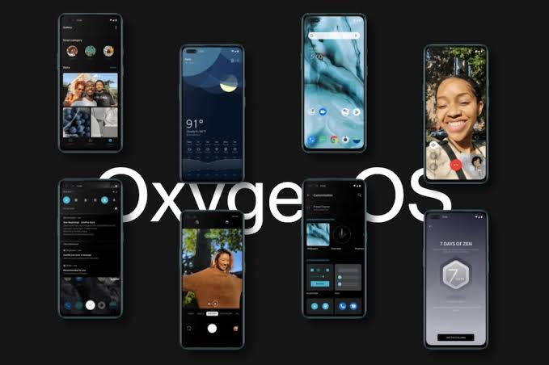
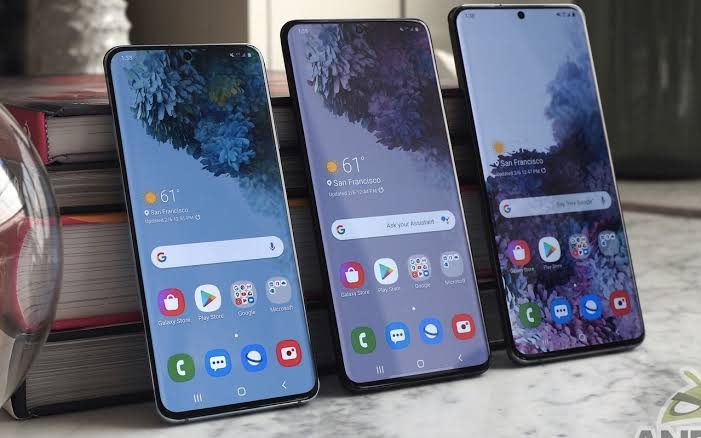

MIUI
MIUI 13 features, release date, download, and eligible devices list have
started doing the rounds of the internet, even though the MIUI 12.5 is
still being pushed to Xiaomi smartphones. The upcoming custom Android skin,
which will take over from last year's MIUI 12.5, is currently in development.
The Xiaomi MIUI 13 update launch is expected in the second quarter, just
like every version in the past few years, and is expected to arrive on
phones from 2019 or newer. Speaking of the MIUI 13 features, it's supposed
to bring optimised animations, new themes, wallpapers, and plenty of security
improvements, among other things. Here's a quick look at MIUI 13 update,
features, device list, and everything we know so far!
Oxygen OS

OnePlus’s Theme Store which will be available in the next OxygenOS update
is taking some ideas from Samsung Themes, Samsung’s comprehensive customisation
store for your OneUI. It will especially be useful for those who like to
adapt the interface of their mobiles to the maximum. Additionally, there
are likely to be both free and paid themes, which will appeal to creators
and designers. OnePlus smartphones should be getting the Android 12 based
OxygenOS update in the coming months. There aren’t many confirmed specifics
about OxygenOS 12 or the theme store right now. However, we’ll find out
more about them on May 18 at the OnePlus Open Ears Forum.
One UI

The One UI 3.1 integrates some of Google's important apps into Samsung's
ecosystem, such as Google Discover and Google Duo. Also, some Galaxy devices
are getting new video calls effects to add in the background, as well as
new camera features like Director's view and Single Take 2.0. Samsung's
tablets will receive a host of productivity features on top of the ones
that the smartphones are getting, such as Second Screen and wireless keyboard
sharing. Keep in mind that Samsung won't bring all the One UI 3.1 features
to some Galaxy devices, but many of them will make it to the majority of
the company's smartphones and tablets.